Version 3.6
Developers usually have their programs write log and debug information to the standard output during coding and testing. This results in a lot of text being printed to Eclipse's console view, often more than can be easily surveyed. Since at any given time, only a small part of this information is of primary interest to the developer, a tool which highlights specific lines or words can significantly increase the readability of this output.
Grep Console allows you to define a series of regular expressions which will be tested against the console output. Each expression matching a line will affect the style of either the entire line or parts of it. For example, error messages could be set to show up with a red background, or integer values showing the state of a certain variable could be rendered in bold font.
The following features have been added to Grep Console during the 3.x version branch:
Grep expressions can now be arranged in folders for better overview. Each folder can be enabled or disabled as a whole.
Highlighting settings are now configured separately from the grep expressions that use them. These styles can be shared among multiple grep expressions.
Grep expressions and styles can now be exported to XML files for sharing or transfer to other Eclipse workspaces.
Grep folders and expressions are configured globally, but they can be individually enabled or disabled for each launch configuration.
The Grep View displays a console like text field that shows only a
subset of
An optional second regular expression can be configure for each item to prevent the item from being considered a match for certain strings even if the main expression matches.
Case sensitivity of grep expressions can now easily be toggled via a checkbox.
The Grep View context menu now provides an action for jumping to the selected line in the original console.
The Grep Console tab is now available for JUnit, Eclipse RCP and CDT launch configurations.
Expressions may now match multiple substrings per line. Previously, only the last match in a line was recognised.
Expressions and capture groups may now be assigned links. These links will be executed when the matched substring is clicked on while the CTRL key is pressed. Different link types can be used to open text files or Java types in the Eclipse editor, open URLs in a browser or execute scripts and system commands.
The expression dialogue now contains a web link to the Java Pattern API documentation (explaining the regular expression syntax).
Items can specify autostart links, which will open automatically whenever a line matching the item's regular expression is written to the console. Autostart links require the Grep View to work.
Lines shown in the Grep View can be completely rewritten. Rewritten lines can include any parts of the original line and may have different styles and links than the original console output.
Expression items may now have a quick expression which is tested before the main expression is evaluated.
A base path for relative file links can now be specified. By default, the project's root directory is used.
URLs without a schema prefix can now be used in URL links. They will automatically be prefixed with "http://".
For file and Java links, an optional character offset can be specified to position the cursor at a specific column in the editor.
Pattern strings in link configurations can reference use Eclipse variables (as used in the arguments tab of the launch configuration dialogue).
Groups of expression items can now be assigned custom names. These names can be used in link pattern strings.
By default, the Grep View now uses the same colours as the Eclipse console. These colours can be changed in the preferences.
On Mac systems, the link modifier key is now Command instead of Ctrl. The modifier key can be changed in the preferences.
Various user interface details were changed to be consistent with the official Eclipse guidelines. The expression dialogue was restructured into tabs.
Link behaviours are now referred to as "actions". "Link" is still used to refer to the clickable portions of texts to which actions can be assigned.
Expressions can now trigger popup notifications which display messages based on the matched console lines even when Eclipse is not currently the active window. An action which is triggered when the user clicks the popup can be configured.
Expressions can now play sounds when they are matched.
Expression occurences can be counted and displayed in a separate view.
Grep Console requires Java 6 and Eclipse 3.4 (Ganymede) or higher.
To install Grep Console from the Update Site, select
http://eclipse.schedenig.name
You can now open the site in the list of available software, check
Grep Console and click
If you are updating from a 2.x version of Grep Console, your old settings will automatically be imported.
The package and ID names have changed in version 3. For this reason, Eclipse will not automatically find updates for Grep Console 2, and after installing the new version 3, the old version 2 will still be installed as well. It is recommended that you uninstall the old version, and Grep Console 3 will show a dialogue to remind you to do this.
Grep Console contributes two actions to Eclipse's console views. Both carry the Grep Console icon.
This actions is available via the console's toolbar. It opens a dialogue for managing grep expressions and styles. The expressions and styles modified via the dialogue are affected globally, but the settings for enabling or disabling expressions and showing them in the Grep View are specific to the current launch configuration.
This action can be found in the console's right click context menu. It is only available if text has been selected in the console. It can be used to create a new grep expression from the selected text. Selecting it opens a a sub menu listing the existing folders. These entries can be used to select the target folder for the newly created expression. A separate entry is available for creating a new folder.
Selecting a folder takes you directly to the edit expression dialogue. Confirming the settings in this dialogue creates the new expression.
This dialogue allows you to add, edit and delete grep expressions. Expressions can be arranged in folders, and can be enabled or disabled for styling, Grep View output and notifications either individually or via their folders.
The dialogue can be opened from the console, the Grep View, a launch configuration or Eclipse's preferences dialogue. Depending on how the dialogue was opened, settings controlling whether items are enabled, disabled, shown in the Grep View and trigger notifications may refer to the current launch configuration or the global defaults. Folders and grep expressions themselves are always stored globally and changing them will affect all launch configurations equally.
Each expression must belong to a folder, and folders can only contain expressions (that is, folders cannot be nested). The dialogue shows all available folders and expressions as a tree structure.
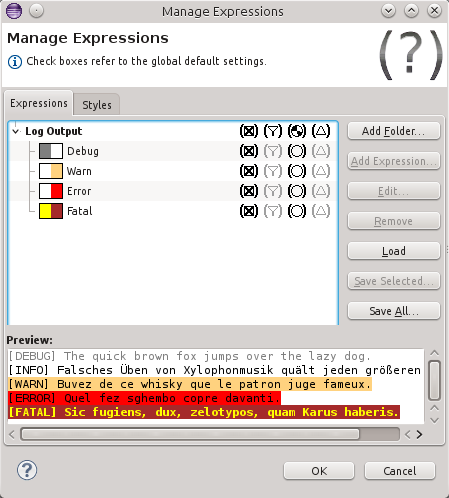
Threeo columns on the right side of the item tree control which items are enabled for highlighting, which items are shown in the Grep View and which items may trigger notifications:
| The item is enabled for highlighting. | |
| The item is disabled for highlighting. | |
| The item is enabled for highlighting (inherited from the default settings). | |
| The item is disabled for highlighting (inherited from the default settings). | |
| The item is shown in the Grep View. | |
| The item is not shown in the Grep View. | |
| The item is shown in the Grep View (inherited from the default settings). | |
| The item is not shown in the Grep View (inherited from the default settings). | |
| The item may trigger notifications. | |
| The item may not trigger notifications. | |
| The item may trigger notifications (inherited from the default settings). | |
| The item may not trigger notifications (inherited from the default settings). | |
| The item may contribute statistics. | |
| The item may not contribute statistics. | |
| The item may contribute statistics (inherited from the default settings). | |
| The item may not contribute statistics (inherited from the default settings). |
Clicking any of these icons will cycle through the available settings in
the order
For highlighting, Grep View output and notifications, folders and expressions are evaluated in the order shown in this list. Items can be reordered via drag and drop. Right clicking an item opens a context menu which can be used to cut, copy and paste items.
The dialogue provides the following actions:
Creates a new folder. Opens the edit folder dialogue.
Creates a new grep expression in the currently selected folder. Opens the edit expression dialogue.
Edits the currently selected folder or grep expression via the matching dialogue. This action can also be triggered by double clicking an item in the tree.
Deletes the currently selected folder or grep expression. This
action can also be triggered by pressing the
Loads folders and grep expressions from a file and adds them to the current tree.
Saves the currently selected folders and grep expressions to a file.
Saves all folders and grep expressions to a file.
Right clicking an item in the tree opens a context menu providing cut/copy/paste actions. Items can also be rearranged via drag and drop.
A panel below the tree displays a live preview of the configured expressions. The text content of the preview is taken from the active console, if available. Otherwise, a default text is displayed. The text can be freely edited, and the right click context menu provides actions to load and save the default text. This context menu also includes an action to create a new grep expression from the text currently selected in the preview. Also, the colour scheme for the preview can be changed from the one used by the Eclipse console to the one used by the Grep View.
All settings edited in this dialogue are only saved after you click the
This dialogue allows the editing of a folder.
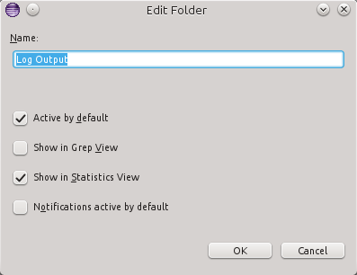
The folder's name can be changed via the text field. Check boxes below the text field can be used to set the default values for whether the folder is enabled for highlighting, for output to the Grep View and for triggering notifications.
This dialogue allows the editing of a grep expression.
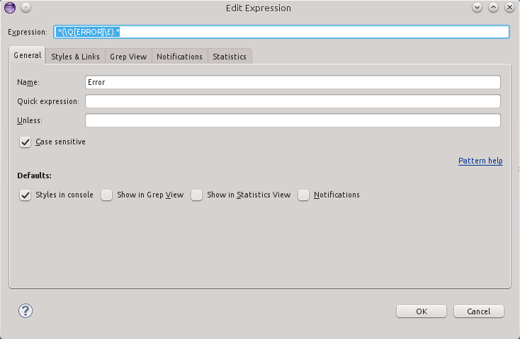
The content of the dialogue is spread across a number of tabs. At the top of the dialogue, the regular expression can be viewed and edited regardless of the selected tab. If the entered expression is invalid, it is shown in red font, and the tool tip (displayed when the mouse cursor hovers over the text field for a few seconds) shows an error message.
As with the expressions dialogue, all settings edited in this dialogue are only
saved after you click the
The top section of this tab contains a series of text fields. Here, an optional name for the expression can be configured, and a quick and an "unless" expression can be set.
If a quick expression has been set for an item, that expression is tested first, and only if it matches is the main expression tested. If a quick expression is specified, the main expression is evaluated on the entire line of text, disregarding the length limits configured in the preferences.
If a quick expression is configured and the expression is matched by a line, the item is not considered a match for the line, even if the main expression matches.
A checkbox can be used to specify whether the regular expressions should be
treated case sensitively. By default, case sensitivity is turned on. The
In the
This tab configures the visual style of lines matched by the regular expression, along with clickable links that may be placed in the console output.
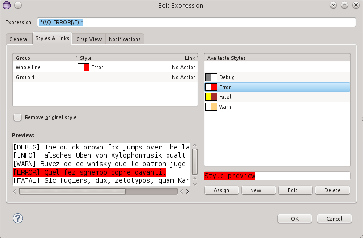
The left table below the header section shows a list of all available
capture groups and their assigned styles and link actions. Each expression always
has at least one capture group labeled Pattern class for details on capture groups and
advanced regular expressions.
Link actions can be edited by double clicking the corresponding cell in the rightmost column, which will open the action dialogue. Right clicking on a link cell will show a context menu for copying and pasting actions. In the Eclipse console and Grep View, links are available when holding down the link modifier key, which can be configured in the preferences and defaults to Ctrl on Windows and Linux and to Command on Mac systems. This will turn the mouse cursor into a link cursor when hovering over a link. Left clicking will open the link and perform the configured action.
Groups may be renamed by double clicking their label in the left column. Named columns can be accessed by their name in action parameters (see below). The tooltip hint for a group will always display the original label.
The table to the right provides a list of all available styles. Each style is coupled with a small preview icon displaying its foreground and background colours. Selecting a style shows a detailed preview below the table. The first item in the table is the null style, which can be used to assign no style at all to a group.
The currently selected style can be assigned to the currently selected
group (in the left table) by double clicking the style or via the
If a rewrite expression has been specified on the
Below the styles and links table, a checkbox controls whether any style that may already be set on the original console line should be removed before applying Grep Console's styles. For example, Eclipse by default applies specific styles to stderr output and stack traces.
A preview in the lower left area of the dialogue provides a preview of the current expression's highlighting settings. Like the preview field in the expressions dialogue, it can be edited and provides a right click context menu to load and save the default preview text. This menu also provides an action to use the current selection in the preview text field as the item's regular expression.
This tab configures how lines matching the specified expression are
displayed in the Grep View. This only applies if the item has been enabled
for Grep View output (via the default settings on the
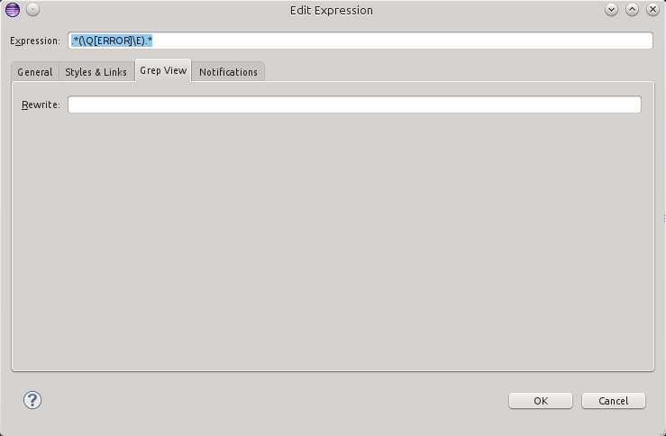
If the expression is used to show lines in the Grep View, a rewrite
expression can be specified to change the line that is shown in the Grep
View. The expression can contain any regular strings. Additionally, index
expressions in curly braces ("{0}, "{1}", "{2}, etc.) can be used to include
parts from the original line in the rewritten line. "{0}" is replaced with
the entire original line, while higher numbers refer to the corresponding
capture groups in the regular expression, if any have been specified. Like
in regular expressions, parantheses ('(' and ')') can be used to denote
groups, which then can be assigned styles and link actions on the
A matched line of text may trigger a number of notifications, which can be configured in this tab.
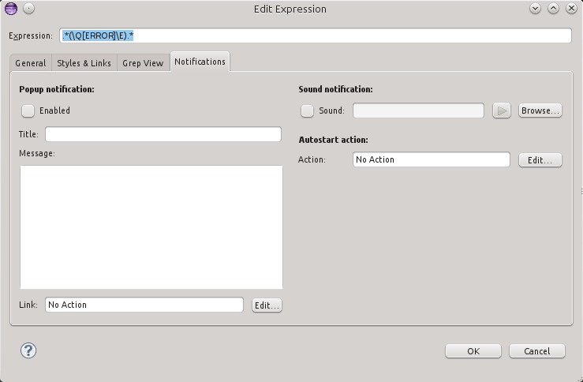
Popup notifications display a popup window on the screen when a console line is matched. The title and message texts for the popup can be configured using pattern strings.
By default, a click on the popup window will active the Eclipse window. A link action can be configured to specify a different behaviour when the popup is clicked.
A sound file can be selected to play whenever a console line matches the specified expression. Sound files of types WAV, AIF and AU are supported.
If an autostart action is configured, the action will be executed automatically as soon as a line matching the regular expression is detected.
The occurences of an expression item can be tracked and displayed in the Statistics View.
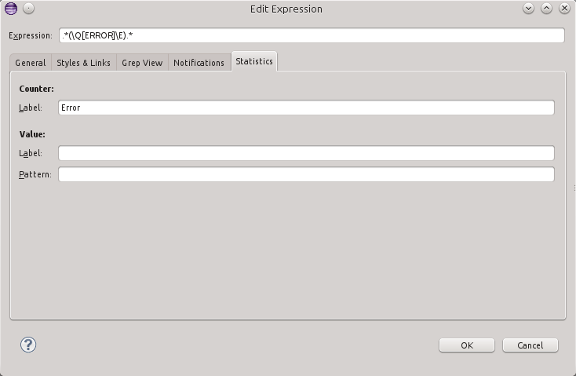
If a counter label is specified, the number of occurrences of the expression item will be counted and displayed in the statistics view under the specified label.
If a value label is specified, the statistics view will have an entry which always displays the content of the latest occurence of the expression under the specified label. By default, the entire match is displayed, but a pattern can be specified to rewrite the line similar to a rewrite expression for the Grep View.
On several occasions, Grep Console uses
The following parameters are available in pattern fields:
The whole line text string of the matched line.
The whole matched text.
The text of the specified capture group.
The text of the matched capture group. Only available in context where there is a specific capture group to which the pattern string refers. For example, in a link action, the parameter refers to the expression item to which the link is attached. If the link was attached to the first capture group, then {group} is equivalent to {1}.
Instead of the group index, its name (if set) can be used as well.
Provides access to the Eclipse variables also used in the arguments tab of run configurations. Note that these variable names are case sensitive and are usually spelled in uppercase letters, even though the run configuration variable dialogue lists them in lowercase.
For example, {eclipse:PROJECT_LOC} is the full path to the project's root directory.
This dialogue is used to edit a action. Most actions are assigned to links.
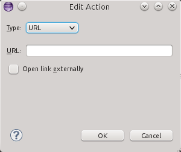
A combo box is used to switch between no action and the available action types. The dialogue will display different fields depending on the selected type. Most of these fields will store pattern strings.
The following action types are currently supported:
File
This type of action opens a file in an Eclipse editor. The file name (a file system path), an optional base directory, line number offset (column) can be specified. All fields are patterns. If no base directory is specified, the project's root directory will be used.
Java type
This type of action opens a Java type in an Eclipse editor. The type is taken from the project which is bound to the launch configuration that started the console. The type name, an optional line number and an optional offset (column) can be specified. All fields are patterns.
URL
Opens a URL, either in an internal browser or via an external program chosen by the system depending on the URL - typically the system browser, but different applications may be configured for specific URLs or file extensions. The URL field is a pattern. If an URL without a protocol is encountered, "http://" will be prefixed automatically.
Command
Executes a system (shell) command. The command and working directory can be specified. If no working directory is set, the current working directory of Eclipse is used. Both fields are patterns.
Script
Execute a script via the Java Scripting API. The script language and code can be specified. The language must be registered in the Java Scripting API. A drop down list shows all available language names (several different names for the same langage may be displayed).
When the script is executed, several variables are available in the code:
The MatchResult instance for the link match.
An array containing the capture group strings. The first element will be the string for the whole match. Remaining elements refer to the item's capture groups.
The whole line text string of the matched line.
The index of the capture group associated with the link.
This dialogue can be used to create, edit and delete styles.
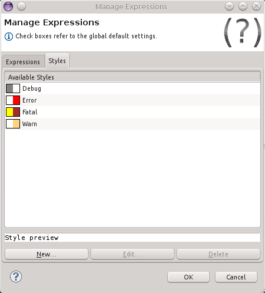
The dialogue lists all currently available styles by name, each prefixed with a preview icon showing its foreground and background colours. A preview label below the list shows a detailed preview of the currently selected style. The tooltip label displayed when the mouse cursor hovers over an item for a few seconds lists the grep expressions which currently use the respective style.
The
All settings edited in this dialogue are only saved after you click the
This dialogue is used to edit a single style.
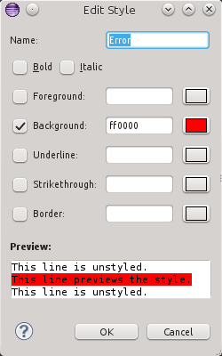
A text field at the top of the dialogue controls the style's name. Checkbox can be used to toggle bold and italic font settings for the style. Foreground and background colours, underlines and strikethrough lines as well as borders can be controlled via individual lines where a checkbox is used to enable or disable the respective settings an a text field is provided to enter the hexadecimal code of the desired colour. A button to the right of the text field shows a preview of the colour and can be clicked to select a new colour via the system's colour dialogue.
An preview label below the dialogue's controls shows a live preview of the selected settings. The top and bottom line of the preview are unstyled, while the centre line shows a preview of the current style settings.
Launch configurations now feature a
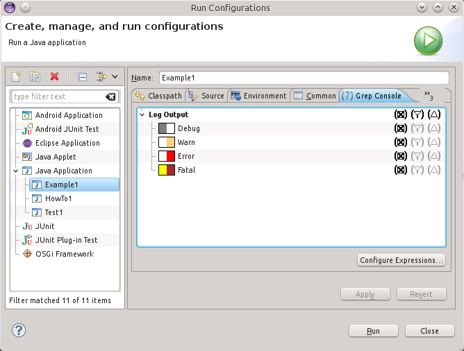
The tree view in a launch configuration only allows changing the
highlighting, Grep View and notification settings for the displayed items
(via the icons in the two columns on the right side of the view). These
settings are specific to the launch configuration. Each option can be set to
The
Eclipse's preference dialogue includes a section labeled
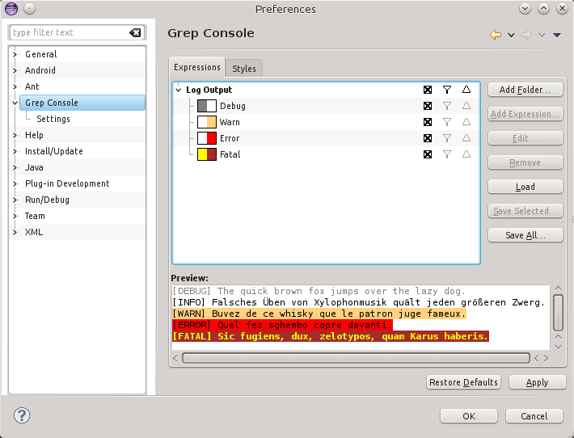
The content of this section is exactly the same as that of the Manage expressions and Managing styles dialogues.
The preference section also has a sub section labeled
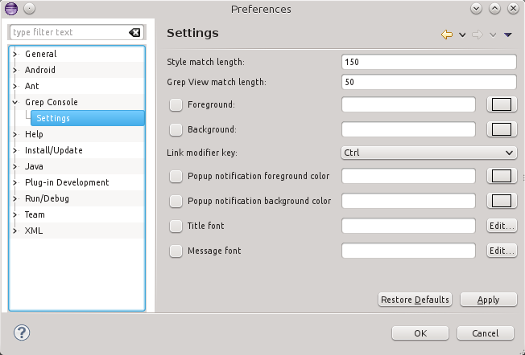
Match length configurations affect the way regular expressions are tested against strings. The configured match lengths specify the maximum length of a line of text that is tested against a regular expression when determining the matching expressions for styling lines or showing them in the Grep View, respectively. If a line is longer than the specified limit, only its beginning is tested against the regular expressions (but when matched, the entire line is still displayed and styled). A value of 0 means that no limit is specified and regular expressions are always tested against the entire line regardless of its length.
Limiting the match length can be useful because testing a large number of long lines can have a significant performance impact, especially when using the Grep View. If your Eclipse workbench becomes slow or even hangs when you have long lines in your console, try shortening the match length limites.
The text and background colours for the Grep View can be configured as well. If they are not set, they default to the same colours used by the Eclipse console.
The modifier key used to click links in the console and Grep View can be changed. By default, Ctrl is used on Windows and Linux, while Mac systems default to the Command key.
For popup notifications, the foreground and background colours and the title and message fonts can be configured. If they are not set, the system's tooltip colours and Eclipse's standard fonts are used as defaults.
The Grep View is used to display a subset of
Right-clicking a line in the Grep View opens a context menu that can be used to jump to the same line in the original console, scrolling it into view if necessary.
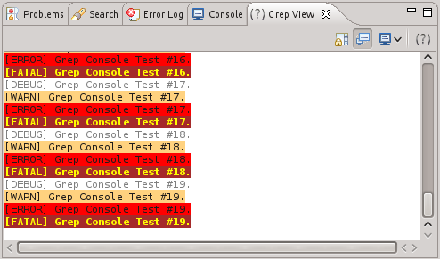
The following actions are available in the Grep View:
Similar to the standard action from Eclipse's console view. Stops the console from auto scrolling when new text is added.
Keeps the currently displayed consoles of the Grep View and Eclipse's console view in sync. When the selected console in one of these views changes, the other view automatically switches to the matching console as well.
Similar to the standard action from Eclipse's console view. Selects the currently displayed console.
Just as the same action in the main console, this opens a dialogue for managing grep expressions and styles. The expressions and styles modified via the dialogue are affected globally, but the settings for enabling or disabling expressions, showing them in the Grep View and triggering notifications are specific to the current launch configuration.
The statistics view displays all the statistics information grabbed by the statistics settings of enabled expression items.
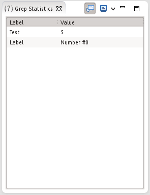
The following actions are available in the statistics view:
Keeps the currently displayed consoles of the Grep View and Eclipse's console view in sync. When the selected console in one of these views changes, the other view automatically switches to the matching console as well.
Similar to the standard action from Eclipse's console view. Selects the currently displayed console.
Grep Console websites:
Grep Console was written by Marian Schedenig. You can find my website here.
Grep Console is licensed under the terms of the Eclipse Public License v1.0.
Copyright © 2008-2013 Marian Schedenig.